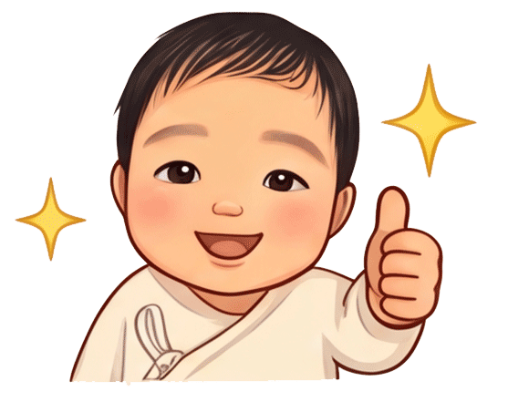

車に乗っていますグッズから、思わずほっこりするLINEスタンプ、月齢別のプチアドバイスまでギュッと詰まった癒やし空間です♪
AIでデザイン＆Illustratorで仕上げたオリジナルグッズ！「初心者マーク」や「赤ちゃんが乗っています」など、安全と可愛さを周囲に届けるラインナップです。

焦らず、比べず、のんびりと。「今日も無事に過ごせたらそれでヨシ！」
毎日の子育てトークを、もっとほっこり可愛く！
「あかちゃんヨシ！」は、AI技術で誕生した愛らしい赤ちゃんの表情を、Illustratorで一部加工して生まれました。
毎日の子育てで、少し疲れたときや車での移動時、ふと笑顔になれるような温もりをお届けします。